I'm Blue
I'm Blue is a project I made for the minor Visual Interface Design, where you can search for blue album covers and movie posters. This project fully focused on designing an interface and not necessarily the concept and the purpose of the webpage. Therefore, the consistent use of colors, fonts and placement of the objects on the page were the primary focus of this project.
- Year: 2021
- Client: HvA
- Role: Visual Designer
 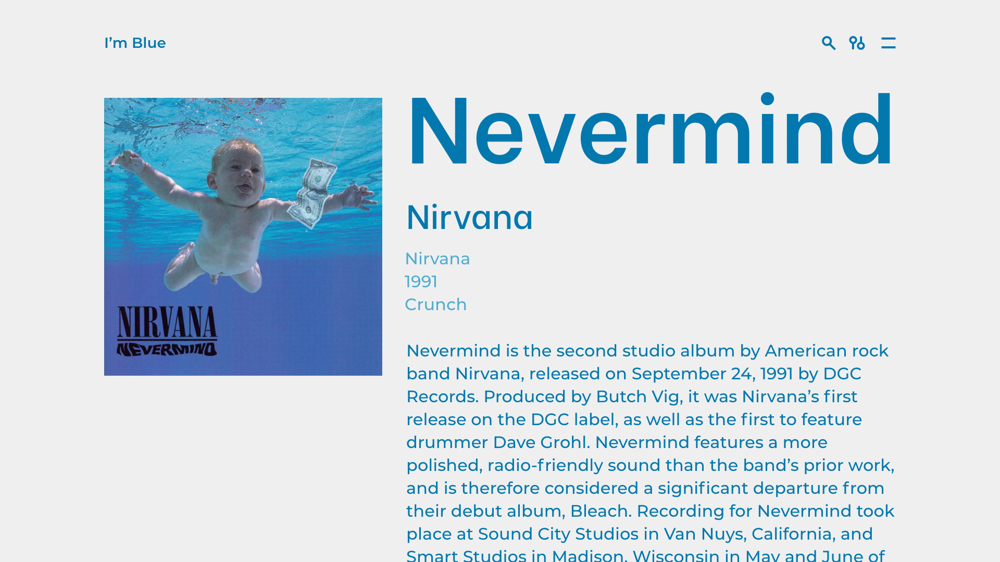
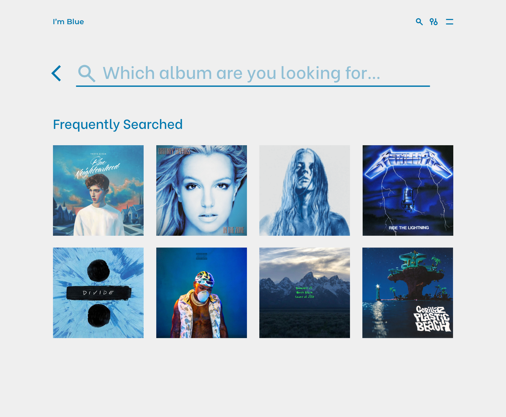
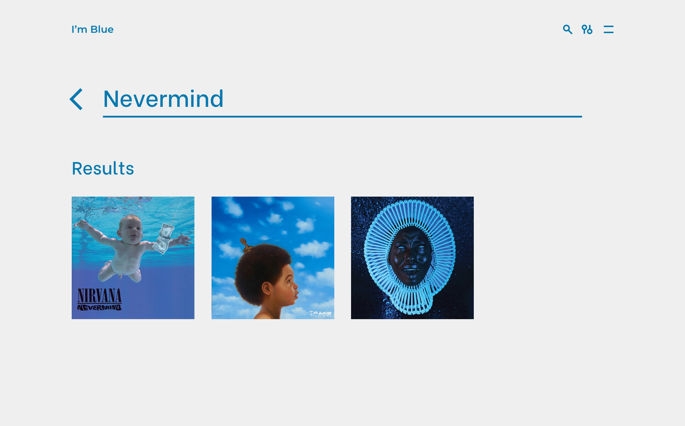
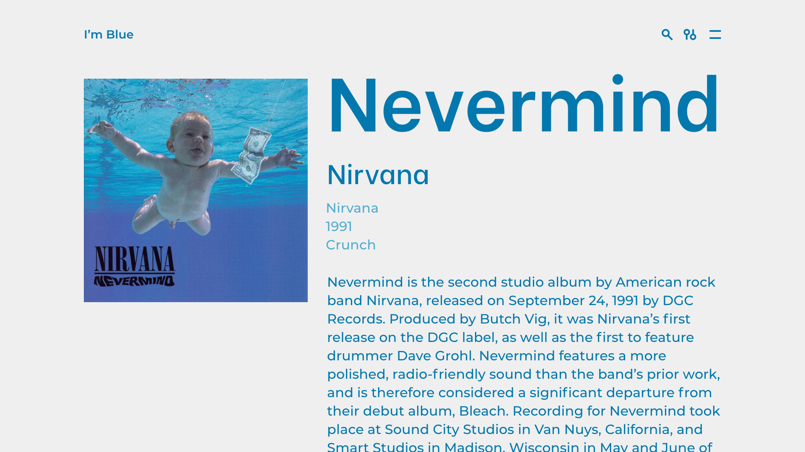
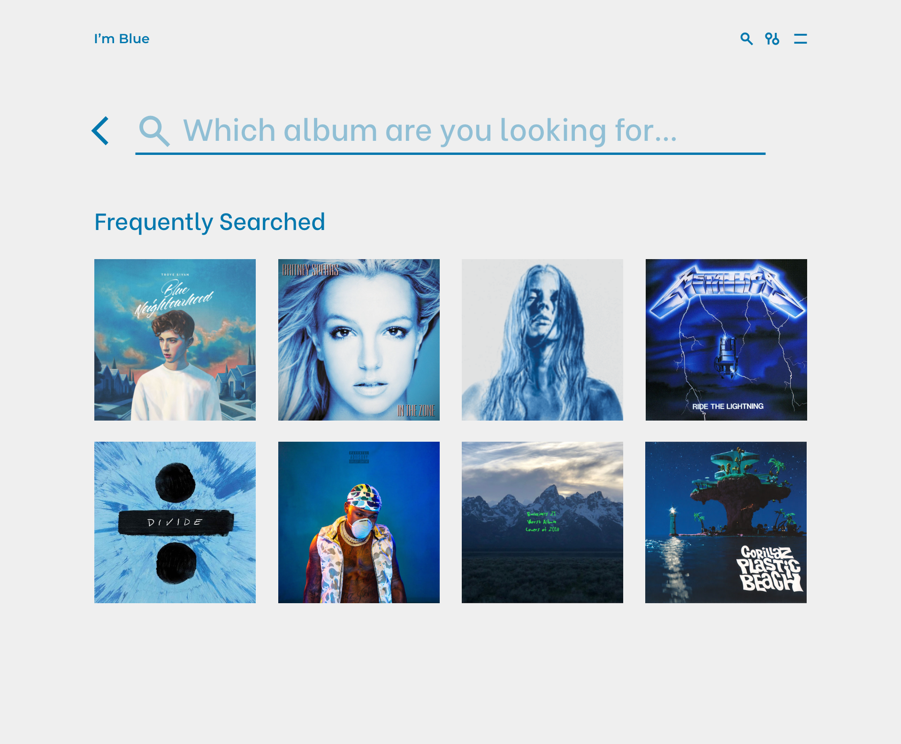
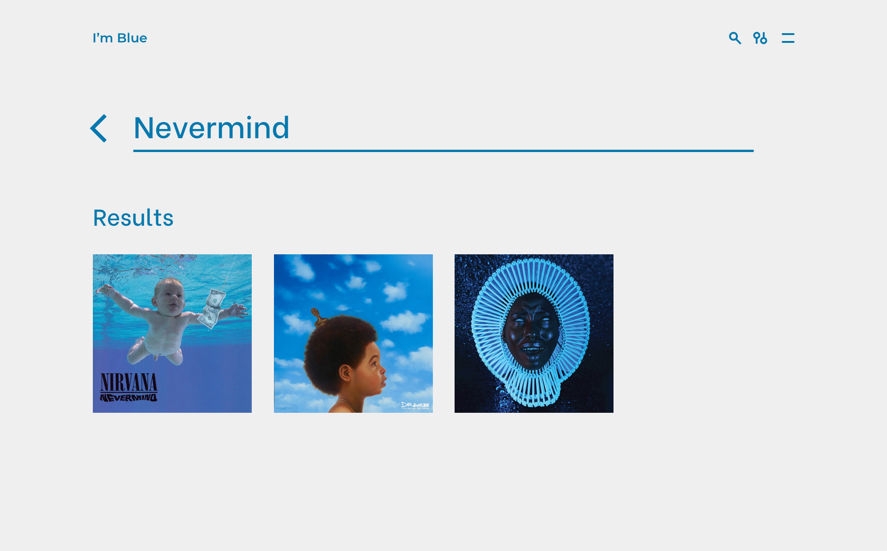
 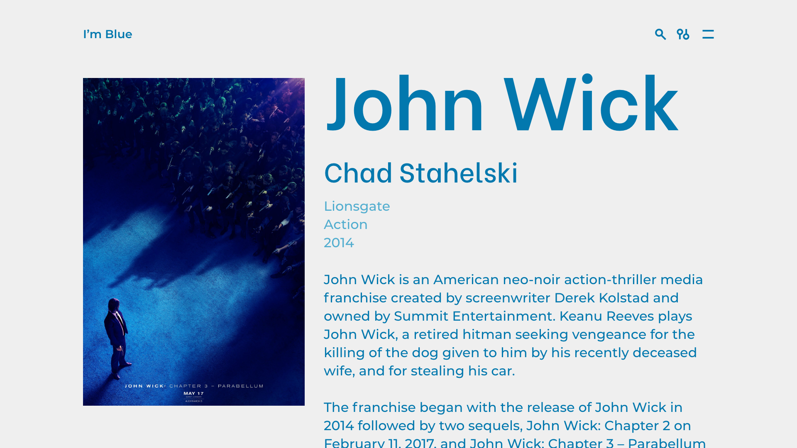
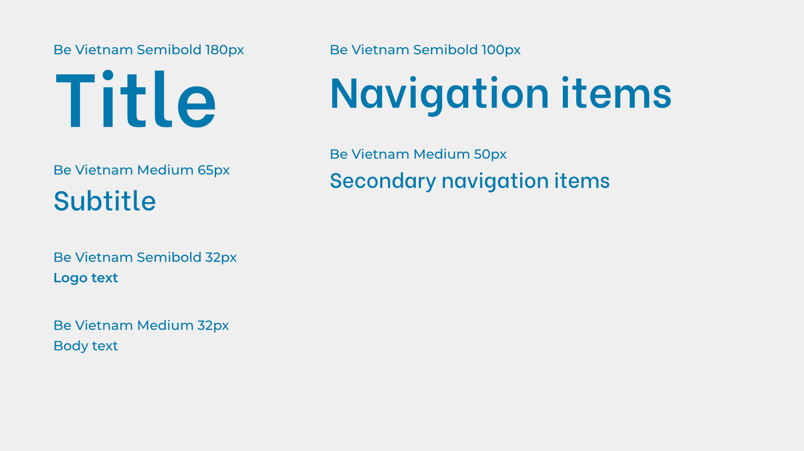
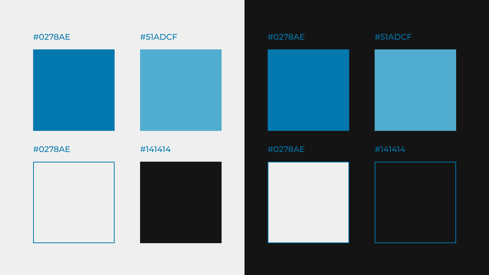
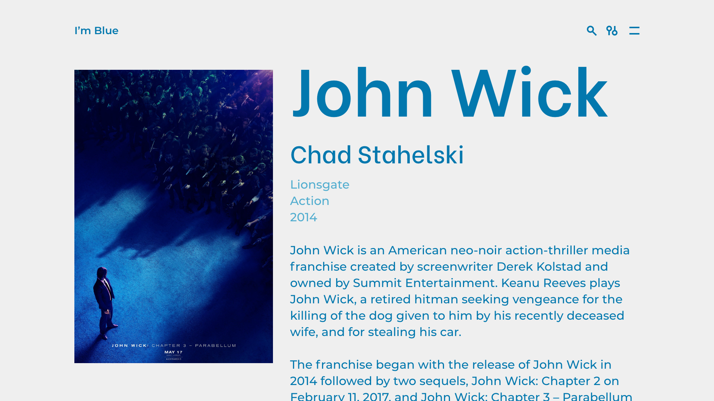
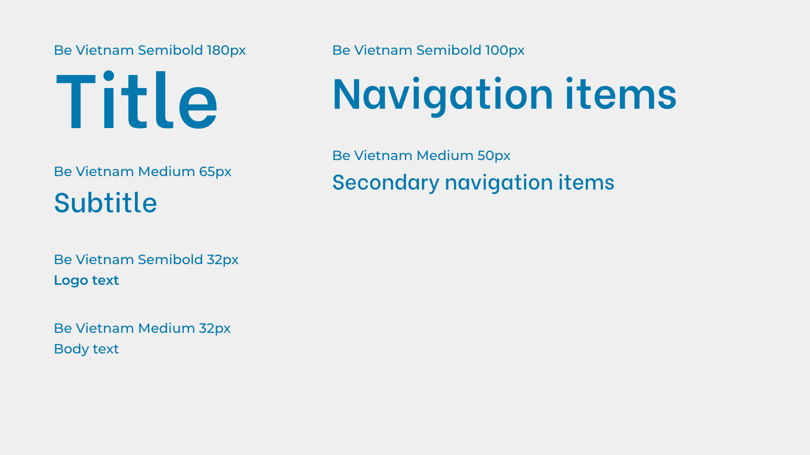
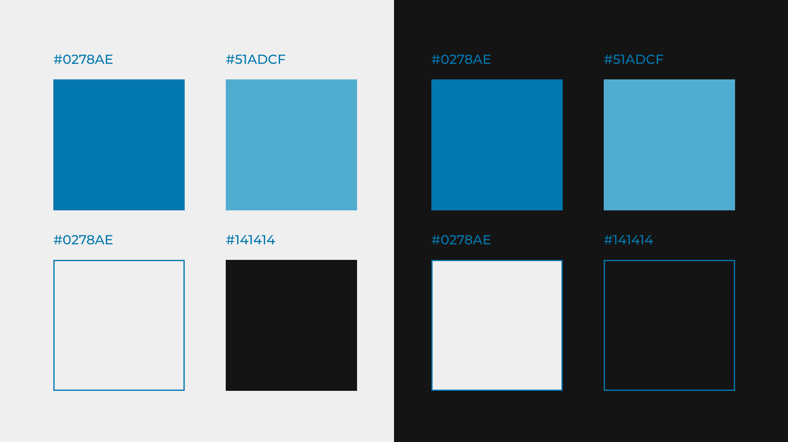